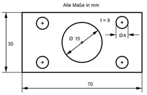

Aufgabe 42 Berechnen Sie die Masse m des Körpers mit einer Dichte ρ von 6,9 g/cm3.

V = Rechteckprisma - großer Zylinder - - 4 * kleiner Zylinder d1 = 15 mm --> r1 = d1/2 = 15 mm/2 = 7,5 mm d2 = 4 mm --> r2 = d2/2 = 4 mm/2 = 2 mm V = a * b * t - п * r12 * t - 4 * п * r22 * t V = 70 mm * 30 mm * 8 mm - п*7,52 mm2 * 8 mm - - 4*п*22 mm2 * 8 mm V = 16 800 mm3 - 1413 mm3 - 401,9 mm3 = = 14 985,1 mm3 = 14,99 cm3 m = V * ρ m = 14,99 cm3 * 8,9 g/cm3 = 133,4 g